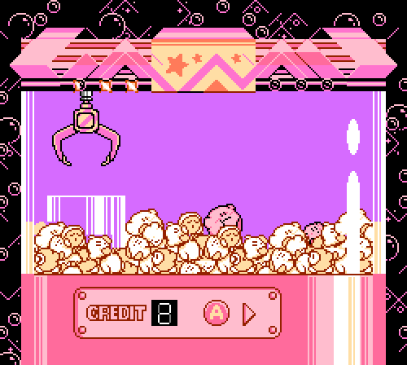

Kirby proviene del planeta Pop Star, donde vive en una casa con forma de cúpula en el lugar imaginario de Dream Land. Tiene una actitud positiva, amistosa e ingenua, y en ocasiones se le caracteriza con un apetito voraz. Además es alguien valiente y siempre dispuesto a usar sus poderes para ayudar a los demás.